This tutorial provides an overview on how to use the CALIPSO Visualization Tool program.
Data collected by the Suomi NPP VIIRS instrument is free to the public, all it takes is going through a couple of steps to download the data. NOAA NCEI’s Earth Observation Group is the primary distributor for the monthly composites of VIIRS Day/Night band data, you can find their webpage here and download data from here
Upon first starting VOCAL, you’ll be greeted with the initial view of the application. The large center most window is the main screen for displaying data from .HDF files, this will be where you see the data.
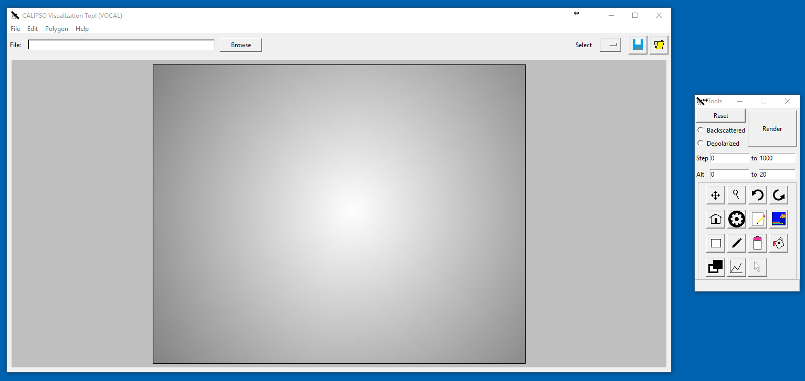The top most menu bar contains four directories: file , edit, polygon and help.
Located near the menu and off to the top right you’ll find three buttons. 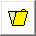 will load a JSON file previously created by the application, and draw it to the plot.
Note
When loading JSON objects using this feature: the file the shape was created in must match the file you currently have loaded, otherwise you’ll get an error! We do not allow users to load shapes from JSON files which are from other files than what the user is currently on.
will prompt you for a filename and then save all selected objects to that file. There are a number of ways to select objects, via the edit menu, using 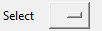 for single objects, or manually selecting objects using .
is a drop down menu feature for single shape selection. The list is populated with all shapes currently drawn to the plot and selecting one from the menu will highlight that single shape. To unselect any shapes, you can either select the blank field in the drop down list or use the deselect all option in the edit menu.
Off to the right is the tools window, this window is dedicated to the manipulation of the data displayed to the plot.
To load a CALIPSO hdf file from the local file directory, click the button at the top of the screen. Navigate to the .HDF file of your choice and select open The file text box will now update and display the name of the imported hdf file. The main screen will appear blank at first. To display a plot, Select the type of plot you would like with either or to render and an optional step (the default is from 0 to 1000). Hit to visualize the data to the screen.
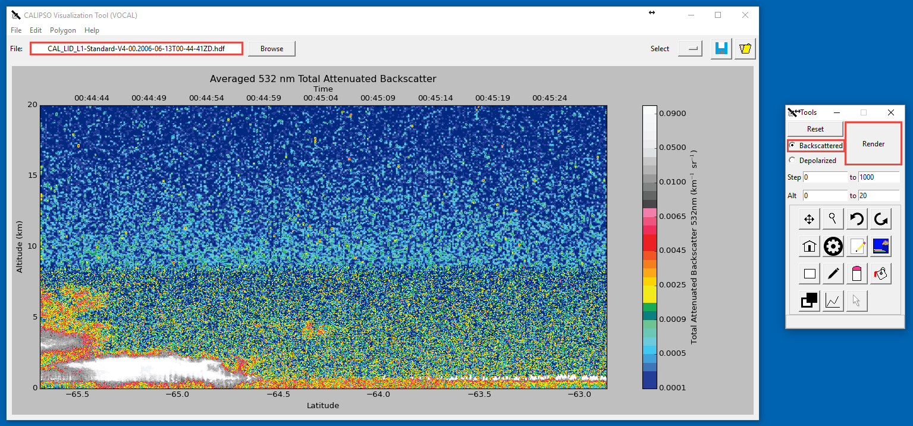The second row of buttons (minus the home button) is dedicated to the viewing, assigning, and extraction of data from shapes
The third row of buttons is for creating and manipulating the physical properties of shapes drawn to the plot.
The last row of buttons deals with global state of shape viewing as well as the exporting of shapes to a JSON file.
One of the defining features of VOCAL is the ability to import and export shapes to a database, this can help researchers share information about aerosols and their trajectory. The database can be accessed under the polygon menu, offering to either import from database or export to database . Let’s start with exporting.
Say you have a number of shapes you’ve labeled with attributes and want to share with other researchers
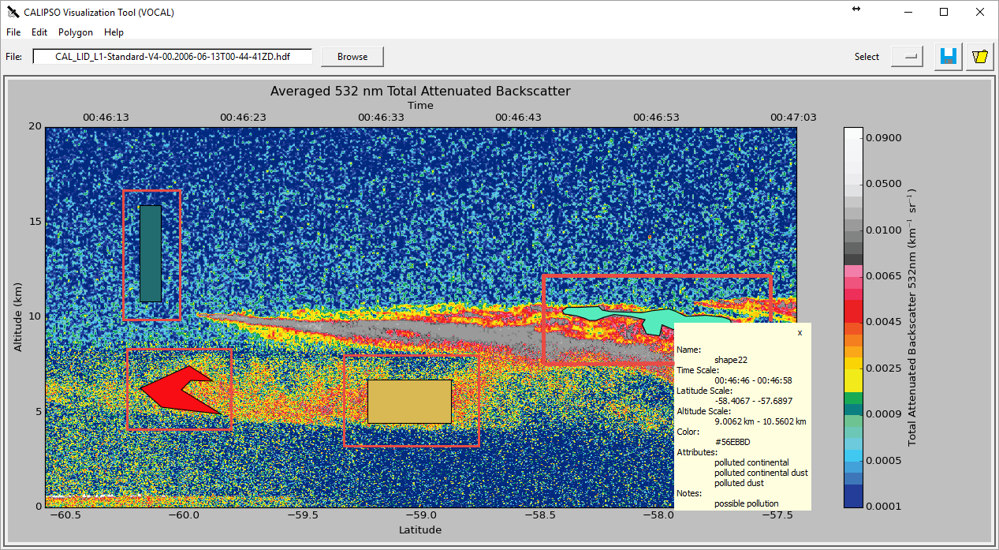Exporting these shapes is as easy as going to the polygon menu and hitting export to database
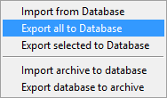
All objects have now been exported to the database! All done!
Now lets import some shapes, consider down the road your database now has a number of different objects from different files; your coworker tells you “Hey, check out shape 31 by John and it’s properties”. There are a couple ways to go about this, first head over to the import from database window.
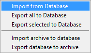
This will open the import dialog
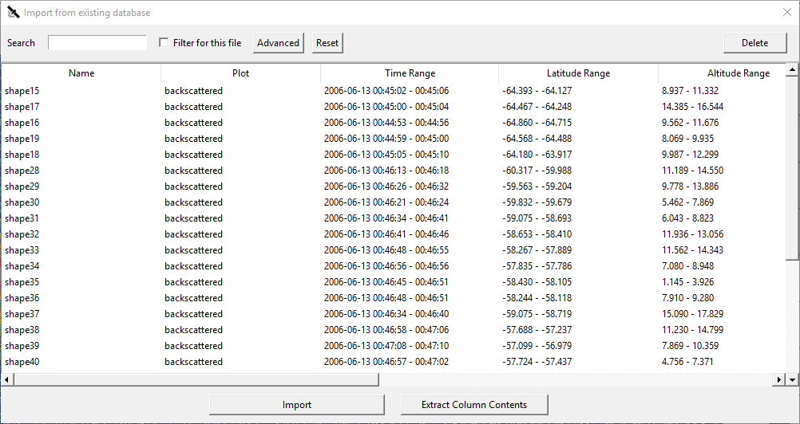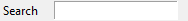 allows the user to dynamically query the database for keys entered into the search bar. It will currently search the Name, Attributes, and Notes notes categories for the string entered. 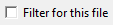 will filter all entries based on whether the filename matches the current filename loaded, note: this will not work if your HDF has been renamed in anyway from the standard CALIPSO naming conventions. 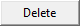 will delete any selected entries from the database, and this is permanent, there’s no undo button here.
So you can go ahead and search either the query John to get all notes that include the name john, or shape31 to get the specific shape. All names are unique, if at any time you see two shapes with the same tag this is a bug on our part please report that issue immediately to us for fixing. So searching for shape40 will leave you with
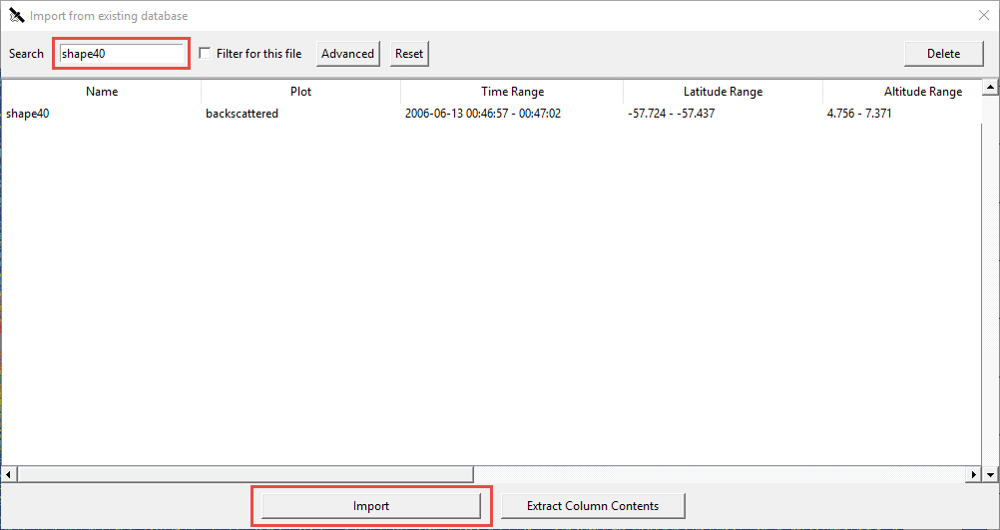Clicking will now import the selection to your internal shape manager. If you aren’t on the correct file the shape was drawn one you won’t be able to see it, each file has a unique range of time thus on object can be loaded onto multiple files. Scrolling right on the import window would have revealed the column File Name, which read CAL_LID_L1-ValStage1-V3-01.2007-06-12T03-42-18ZN, so upon loading up that file walla! your object should appear.
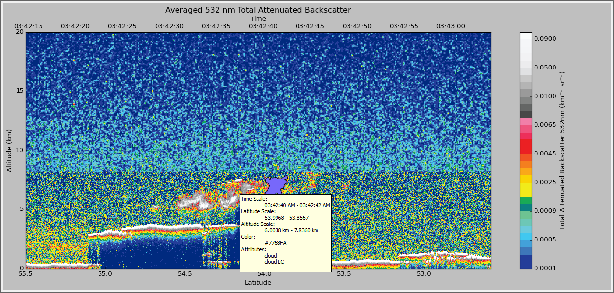you’re free to view properties of this shape, export it’s data to JSON or even modify the shape and re-export it back to the database.
Another useful feature of the database is extracting column data in a specified file format. If say you’d like to get a list of files that contain the ‘smoke’ attribute, you can do just that. You can open the column extraction tool inside of the import database window by clicking . This opens:
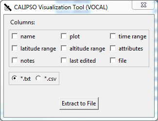Once here, you can select any columns you’d like to export as well as the file format. The .csv format is RFC 4180 compliant and the text file is a simple whitespace and newline separated format. For example if one were to select to export the columns 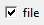 and 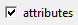, in the format 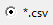. You would see something like:
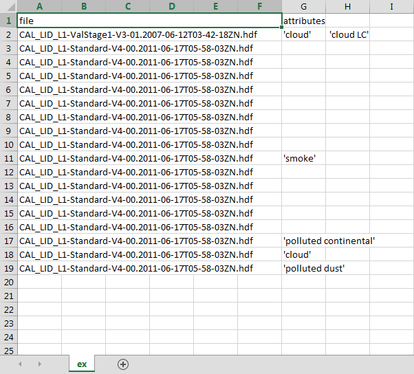Now say you get into contact with another researcher, one who’s been developing a database on tracking low hanging clouds in the atmosphere for example; you’ve been focusing on tracking other objects but would love to take a look at his shapes, well VOCAL has a feature for sharing entire databases with each other!
Let’s export a database first, you’ll find the database exportation feature in the Polygon menu option, pictured here:
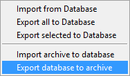
Selecting this option will ask you if you wish to really export your database to an achive, and selecting yes will prompt you with a file dialog for choosing the name and location of the archive you’d like to create.
Note
Exporting your database is a copy operation, the contents of your database will remain the same and simply be copied to the archive, which can be loaded as shown below
Once exported you’ll have an archive of your specified name, something like my_shapes.zip. Feel free to take a peek inside the file, it’s simply a formatted zip containing your shapes exported in a JSON format. Now you can share this archive file to whoever you wish and easily share your entire database for other researchers!
Now when you receive a database archive yourself, you’ll want to import that archive and start using the shapes right away; the command Import archive to database will do just that.
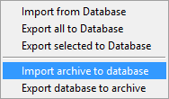
Upon clicking this menu option, a prompt will open asking you for a valid .zip file. Navigate to a zip file in the valid format that Export database to archive produced, and open that. VOCAL will then extract the data from that file and import all objects located in the archive.
Warning
Importing shapes from an archive will not preserve their tag, regardless of whether is already exists or not, imported shapes are treated as ‘new’ creations e.g. they will be assigned a unique tag based off of the current database tags.
VOCAL’s database comes with a robust querying ability, allowing you to search over a wide range of parameters. To open the advanced search dialog, head over to the polygon -> Import from Database menu to open up the database window, and then click on 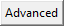. Once open you will see
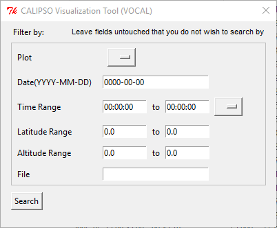Any fields not entered or filled out will simply be ignored upon searching, so don’t worry about filling fields out with empty values.
Note
You must fill out the entries in the exact format as they appear in the dialog. Additionally, deleting a default value and leaving the entry empty will cause undefined behavior
So lets say you have a bunch of items in your database, but you only really want to see shapes from the file CAL_LID_L1-Standard-V4-00.2006-06-13T00-44-41ZD.hdf with a latitude of -60 to -50, and maybe you also don’t want anything higher than 13km. Here’s what it would look like within the advanced search dialog:
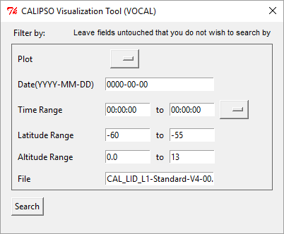And here’s what we get!
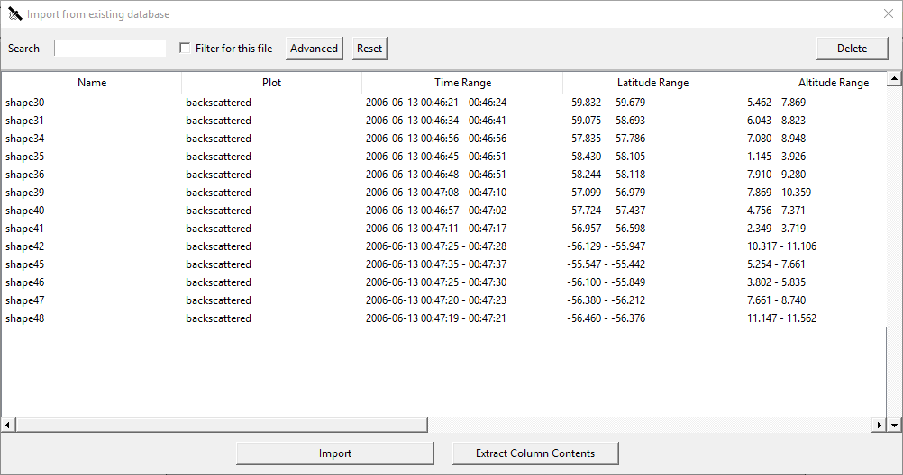That’s all there is to it. Notice we left everything blank that we didn’t care about, if you don’t touch it that field won’t be checked!
{kind=link}
{kind=link}
{kind=link}
{kind=link}
{kind=link}